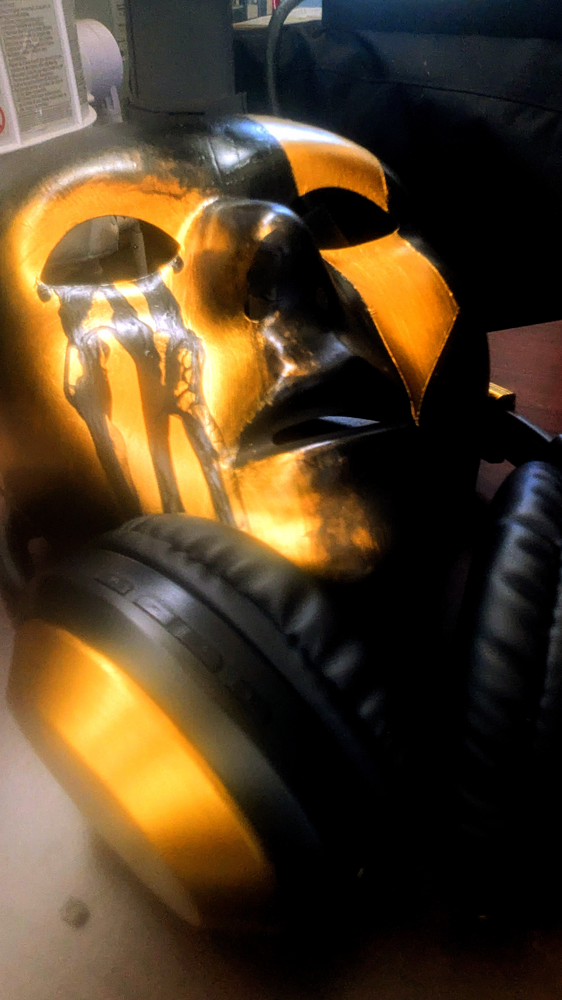
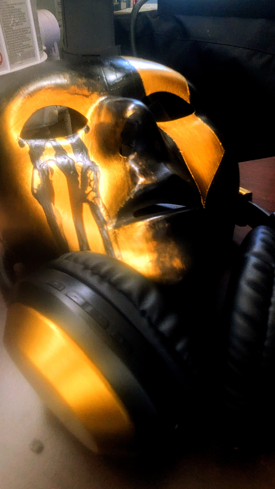
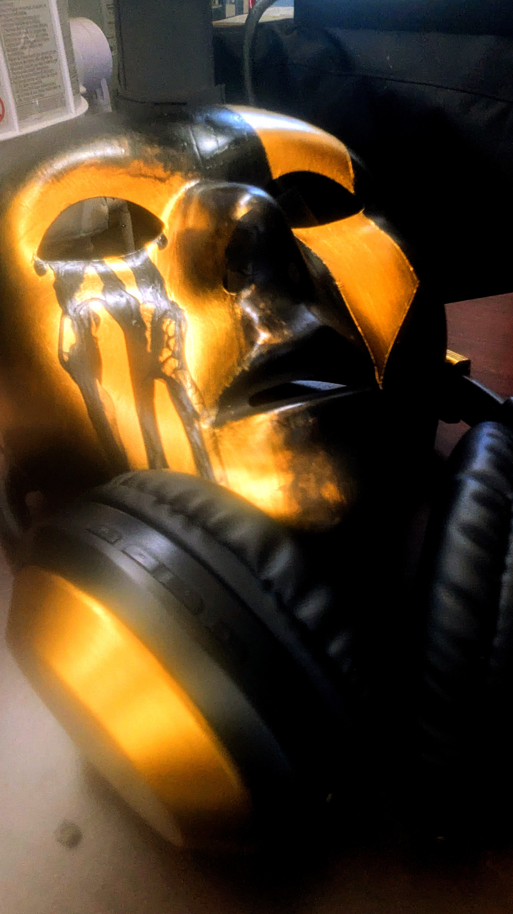

Visuals
A glimpse into the aesthetic and behind-the-scenes world of Finn Ominal.


 

Music. Visuals. Movement.
Beats by Finn Ominal of Urban MindState.

Finn Ominal is a producer, storyteller, and creative born in Flatbush, Brooklyn. Through genre-blending beats and raw emotional soundscapes, he builds sonic worlds that connect and empower. A member of Urban MindState and East Side City Music, his work is rooted in culture, identity, and purpose.
Full Bio →
🔥 Upcoming: Divine Times by Li63rty — dropping Dec 26, 2025
A glimpse into the aesthetic and behind-the-scenes world of Finn Ominal.
